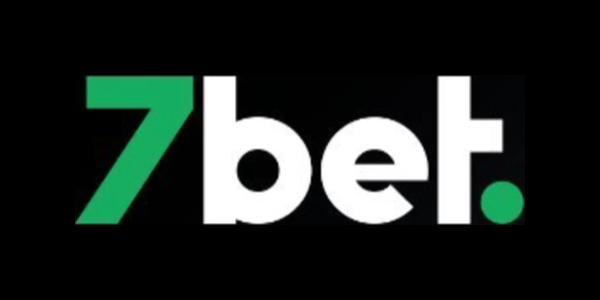
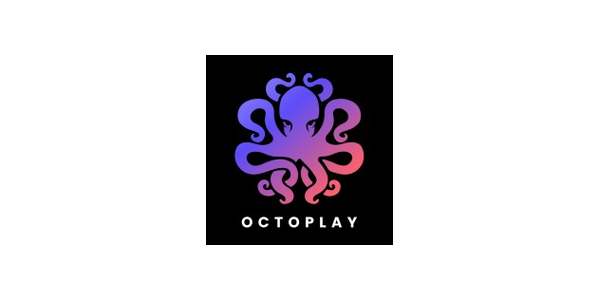
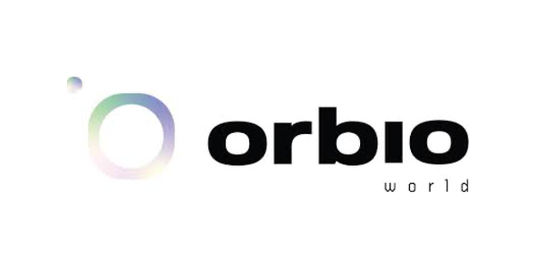
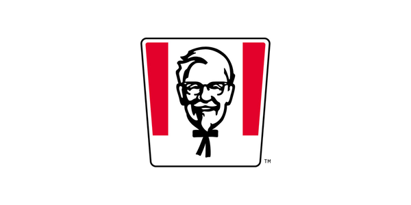
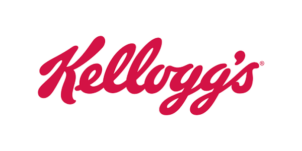

Klauskite savo skaičių bet ko.
Atsakymą gaukite per minutes.
Milo prisijungia prie įrankių, kuriuos jau naudojate, ir atsako į verslo klausimus paprasta kalba. Jokio SQL, jokios ataskaitų eilės, jokio laukimo. Tik atsakymas, su parodytais skaičiavimais.






Paprasta kalba įeina, atsakymai išeina
Užrašykite klausimą taip, kaip jį pasakytumėte garsiai. „Kurie klientai rizikingi?“ „Kas lėmė mūsų maržą šį ketvirtį?“ Milo perskaito, įvykdo ir parodo, iš kur atsirado skaičius.
Visi jūsų įrankiai, sujungti
Jūsų duomenų saugykla, reklamos platformos, CRM, finansai ir paštas sujungti į vieną vaizdą. 700+ integracijų, todėl atsakymas apima viską, o ne slypi penkiose kortelėse.
Paaiškinimai, ne tik grafikai
Milo ne tik nubraižo skaičių, bet ir pasako, kas pasikeitė ir kodėl. Logika parodoma kiekvieną kartą, todėl galite pasitikėti atsakymu ir veikti dar susitikimo metu.
Minutės, ne dienos
Klausimas, kurį įprastai atiduotumėte analitikui, atsakomas dar jums kalbant. Ataskaitų skydeliai susikuria patys pagal tai, ko jūsų komanda klausia dažniausiai.
Pasiruošę per kelias dienas, ne per ketvirtį.
Prijunkite
Nukreipkite Milo į įrankius, kuriuos jau naudojate. Nieko nekeičiate, jokios duomenų migracijos, nieko naujo komandai mokytis.
Klauskite
Bet kas komandoje paprasta kalba užrašo klausimą ir gauna aiškų atsakymą su parodytais skaičiavimais.
Veikite
Sprendimai priimami remiantis įrodymais, ne spėlionėmis. Analitikai atgauna laiką svarbiausiems darbams.
Sukurta darbui, kuris turi atlaikyti patikrą.
Jūsų duomenys lieka jūsų. Jie niekada nenaudojami modeliams mokyti, kiekvienas atsakymas atsekamas iki šaltinio, o prieigą valdo jūsų pačių teisės. Milo atitinka SOC 2, ISO 27001 ir BDAR reikalavimus ir talpinamas ES, todėl gautą atsakymą galite drąsiai pateikti valdybai, auditoriui ar reguliuotojui.
Galimybė atsakyti į klausimus tiesiogiai vadovų susitikimuose, užuot savaitę laukus analitiko.
Tai tarsi turėti duomenų inžinerijos komandą. Anksčiau turėjau tikrą specialistą, kuris visa tai darydavo. Čia tas pats, tik geriau.
Analizė, kuri analitikui užtrukdavo savaites, dabar trunka dvi minutes.
geresnių klausimų.
Tom Pickett · tom@milo.ai